The 10-Month Moving Average Is the Most Famous Rule in Tactical Investing. I Tested It for 40 Years.
It agrees with the momentum filter from the last article 88% of the time, trades twice as often to do it, and the famous number turns out to be the wrong one.
If you have read anything about tactical asset allocation, you have met this rule. Each month, compare the S&P 500's price to its 10-month moving average. Above it, hold stocks. Below it, hold bonds or cash. Mebane Faber's 2007 paper made it the default starting point for a generation of retail systematic investors, and it is the engine inside a large share of the "trend following for normal people" content published since.
Last time I found that Dual Momentum's entire contribution came from its absolute momentum test — a different trend filter, built on 12-month returns rather than a moving average. I promised to find out whether the moving average does anything that filter does not.
The short answer, over 39.8 years of daily data: no, and it charges you for the privilege. The two filters make the same call 88% of the time. The moving average version switches 48 times to momentum's 27, gives up 1.2 percentage points a year, and ends with $35 per dollar invested against momentum's $55.
But the more useful finding is the one nobody mentions: 10 months is close to the worst setting you could pick. Every longer average I tested beat it, on both return and Sharpe, while trading less.
New to systematic trading? Terms like CAGR, Sharpe ratio, whipsaw and walk-forward analysis are explained in plain language in the glossary — 64 definitions, no prior knowledge assumed. Dotted underlines link straight to the relevant entry.
The rule, exactly as backtested
On the last trading day of each month, using month-end closes:
- Compute the 10-month simple moving average of the S&P 500's month-end closes.
- If the latest close is above that average, hold 100% equities.
- If it is at or below, hold 100% US aggregate bonds.
- Execute at the next trading day's close. Hold until the next month-end.
Faber's original used cash as the defensive asset and applied the rule across five asset classes. I use bonds here so the comparison against Dual Momentum's absolute-momentum test is apples to apples — that rule also parks in bonds. The T-bill version is reported in the variants table below, and it is worse.
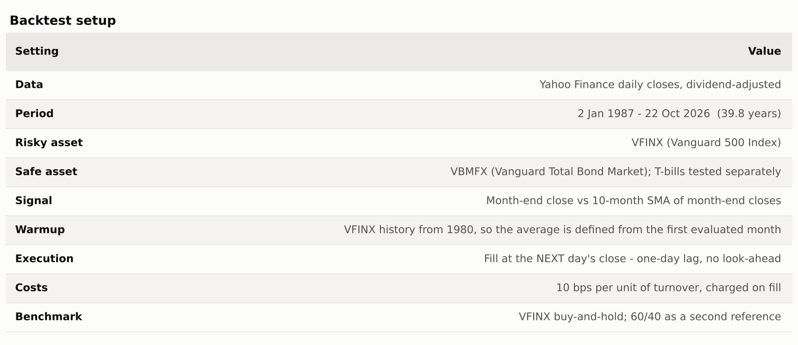
One warm-up detail that matters more than it sounds. A 10-month average needs ten months of history before it exists. If you start the price series at the safe asset's inception, the filter is undefined for the first ten months and the strategy sits in bonds through whatever the market does. In my first run that artifact alone turned 1987 into a 31% loss, because the rule missed the rally and then bought in just before the October crash. A real investor in January 1987 had seven years of S&P history, so the backtest loads price data from 1980 and only evaluates from 1987. If you build this yourself, check that first.
Results
Over 39.8 years, the moving-average filter returned 9.38% a year against 10.61% for absolute momentum and 11.24% for simply holding the index. All three ended with very different risk: the filters cut maximum drawdown from 55% to around 34%.
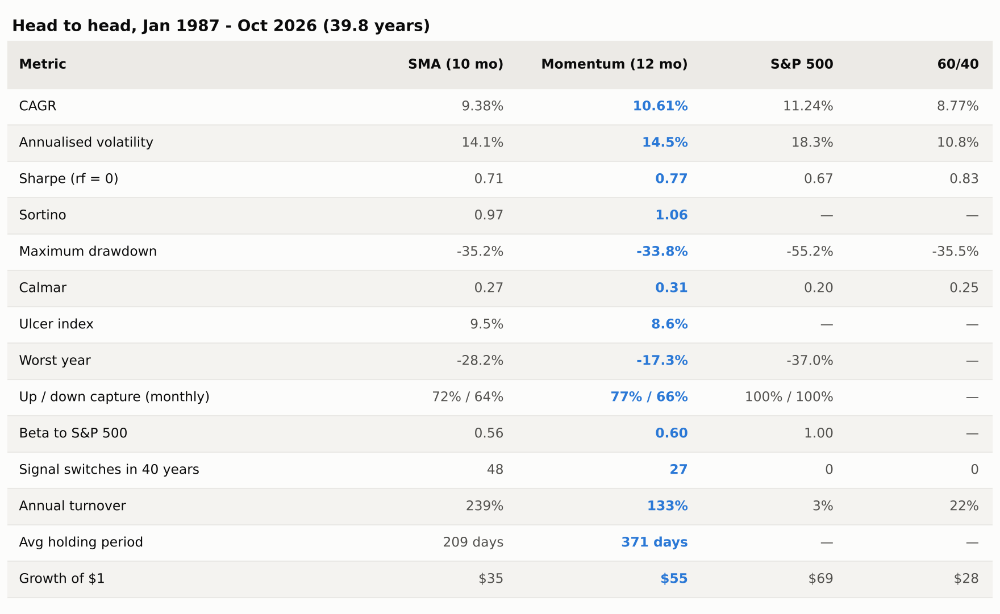
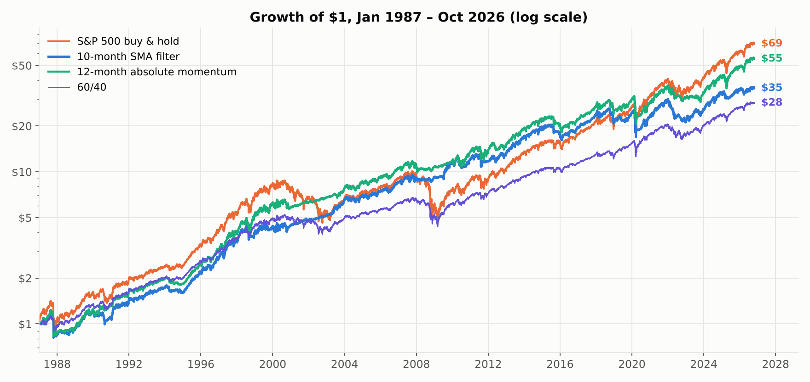
Note what this table does not show: a filter beating the market. Neither does. This is the same conclusion as the last article — a trend filter is a risk-management tool that happens to roughly keep pace, not a way to earn more. The 60/40 column is there as a reminder that a plain static allocation got a better Sharpe ratio than either filter, with no trading at all.
Are they even different filters?
This is the question the article exists to answer, and the clearest way to see it is to plot what each filter was doing, month by month, for forty years.
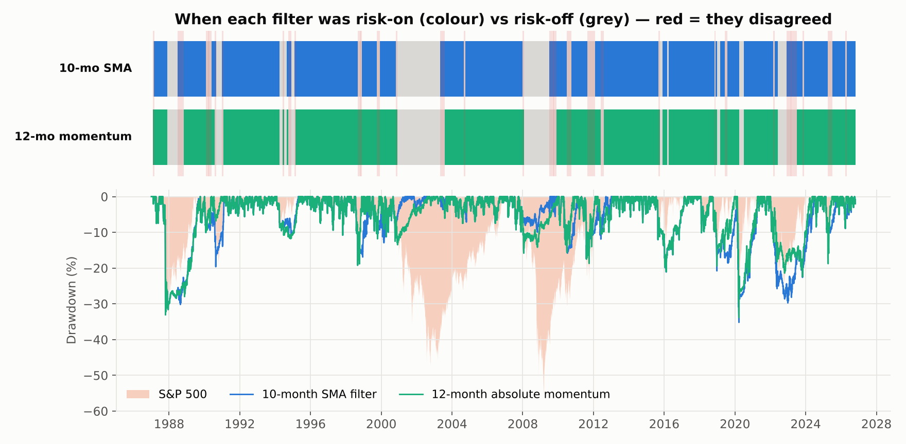
The two filters agreed on 88% of the 478 months. More importantly, they agreed on all the months that mattered: both sat out most of the dot-com bust, both sat out the financial crisis, both were fully invested through the 2020 crash. The disagreements are thin slivers at the edges of regime changes.
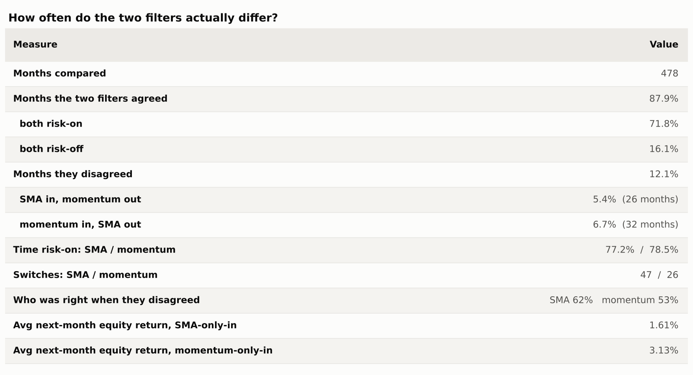
When they did disagree, neither was reliably right. The moving average won 62% of those months and momentum 53% — on samples of 26 and 32 months, which is far too small to call a winner. But the size of the calls differed: in months when only momentum was invested, equities returned 3.1% on average; when only the moving average was invested, 1.6%. Momentum's rare solo bets were worth about twice as much.
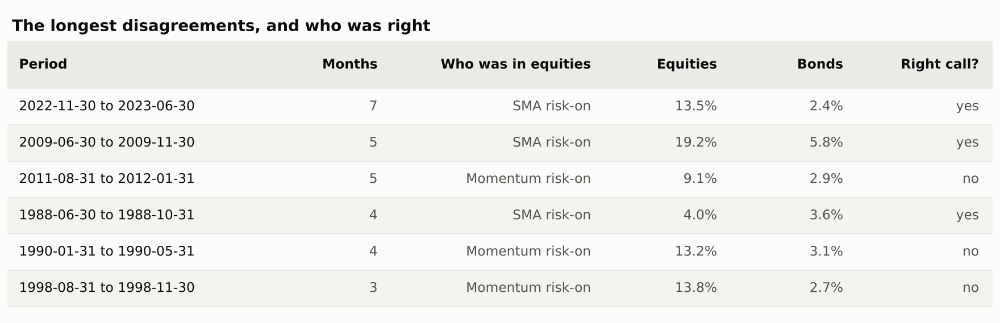
So the gap between the two strategies is not explained by better calls. It is explained by how often each one trades. The moving average switched 48 times against momentum's 27, holding a position for 209 days on average against 371. Every one of those extra switches is a chance to sell low and buy back higher — whipsaw — and in aggregate they cost about 1.2 points a year.
When it works, when it bleeds
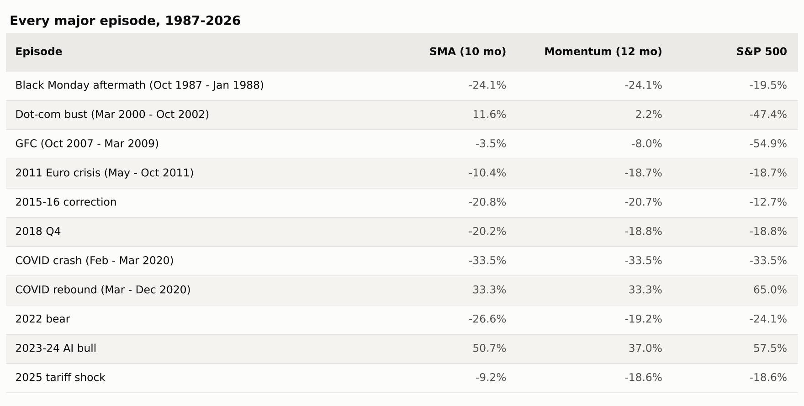
The good. The dot-com bust is the showcase: the moving average returned +11.6% while the index lost 47%, because the signal turned negative in late 2000 and stayed negative for two years. The financial crisis is almost as good, –3.5% against –54.9%. These are the slow, grinding declines a monthly filter is built for, and it did its job.
The bad. October 1987 is the clearest lesson in the whole series. Both filters were fully invested going into Black Monday, both sold at the month-end immediately after, and both finished the episode down 24.1% — worse than the 19.5% you would have lost doing nothing. A monthly rule cannot react to a one-day crash, and selling at the bottom of one converts a recoverable loss into a locked-in one. The same pattern repeats, less dramatically, in 2020.
2022 is the other instructive failure: the moving average lost 26.6%, worse than both momentum (–19.2%) and the index (–24.1%), because it flipped in and out three times while bonds were falling alongside stocks. A trend filter whose defensive asset is also trending down has nowhere to hide.
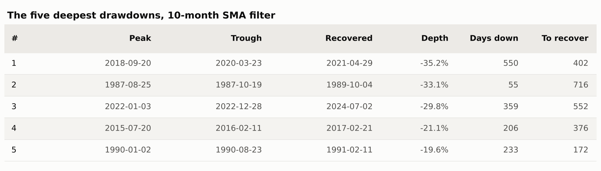
Robustness
1. The famous number is the wrong number
Faber's paper used 10 months, and essentially everyone who followed copied it. Over this window, that is close to the worst choice available.
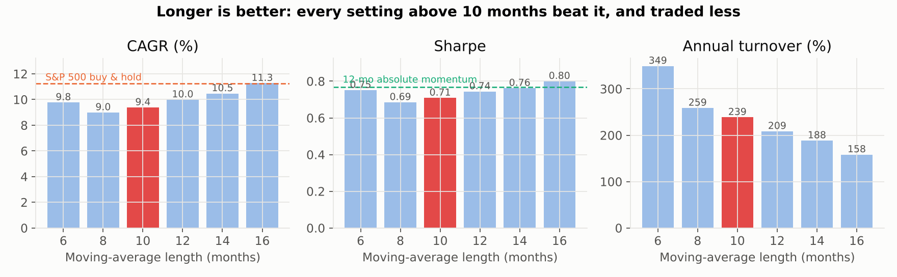
Every setting longer than 10 months produced a higher return, a higher Sharpe and less trading. At 16 months the filter returns 11.27% — effectively matching buy-and-hold while keeping the drawdown protection — on a third less turnover than the 10-month version.
Two honest caveats. First, this is a single 40-year sample; a monotonic ranking across six settings is suggestive, not proof. Second, I am reading this chart after seeing it, which is exactly the hindsight the walk-forward test below exists to control for. What I would not do is claim 16 is the right number — the defensible claim is narrower: the evidence for 10 specifically is weak, and the cost of being wrong about it is around two points a year.
2. A buffer fixes about half the gap
If the problem is too much switching, the standard remedy is hysteresis: require the price to clear the average by some margin before buying back, and to fall below it by the same margin before selling. This is a one-parameter change.
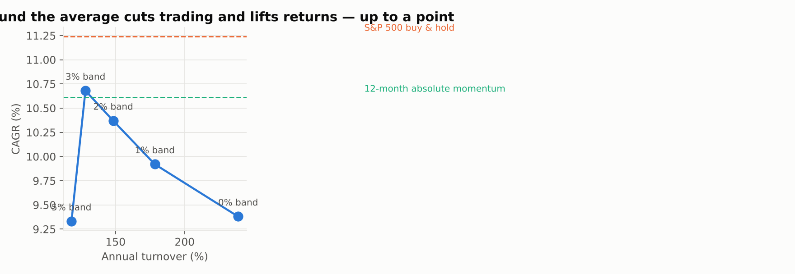
A 3% band takes the strategy from 9.38% to 10.68% and cuts turnover from 239% to 128% — roughly closing the gap to absolute momentum, which is itself a slower-moving signal. That is the real lesson: most of the moving average's underperformance is trading friction, not bad judgment, and anything that makes it slower helps. Past 3% the buffer starts costing more in late entries than it saves in whipsaw.
3. Before and after publication
Faber published in 2007. Splitting there, with no refitting:
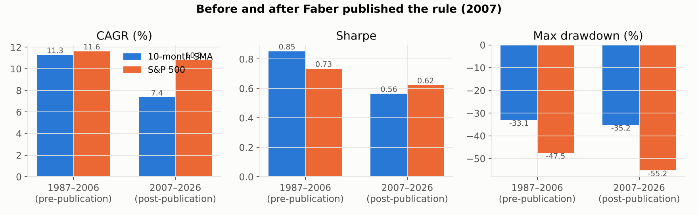
Before: 11.29% a year against the index's 11.63%, with drawdown cut from 48% to 33% — a good risk-adjusted outcome. After: 7.36% against 10.85%, trailing by 3.5 points a year. The same post-publication decay that Dual Momentum showed, and for the same reason — the second half simply contained fewer of the slow bear markets this kind of rule is built to catch.
4. Walk-forward, and a surprise
Re-choosing the moving-average length each year from the best of the previous five years, then trading it out-of-sample for the next year, across 34 annual windows from 1992:
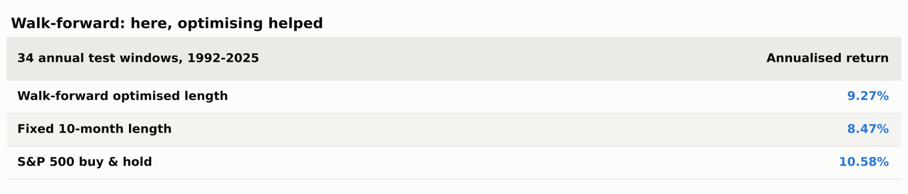
This is the opposite of what happened in the last article, where optimising made Dual Momentum worse. Here it helped, by 0.8 points a year. The reason is visible in the sweep chart: the moving average's parameter surface slopes in one direction rather than wandering, so an optimiser looking backwards keeps choosing longer windows and keeps being right. When a parameter has a real gradient, fitting it works. When it is noise, fitting it fails. The same test tells you which situation you are in — which is the whole argument for running it.
5. Does combining them help?
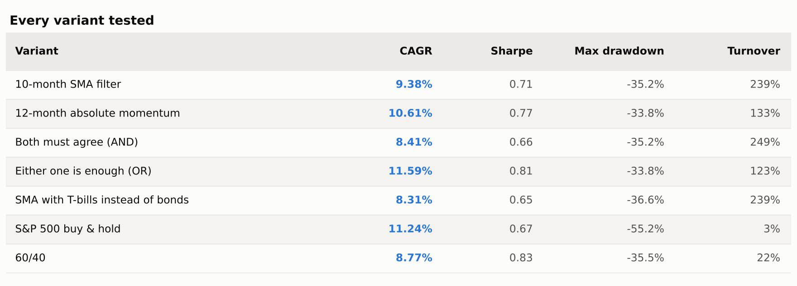
Requiring both filters to agree before investing (AND) makes things worse — 8.41%, the weakest variant tested — because it inherits both filters' late entries. Investing when either is positive (OR) produced the best numbers in the whole study: 11.59% a year at a 0.81 Sharpe with the drawdown still capped at 33.8%, the only variant to beat buy-and-hold on return while halving the risk.
I would treat that result with suspicion rather than enthusiasm. It is the best of roughly a dozen variants I examined, which is exactly the setup that manufactures false positives, and the mechanism is mundane — OR is simply a slower, more reluctant filter, which is the same thing the buffer and the longer lookback achieved. I would want to see it hold on international indices and on a different era before trading it.
What I'd change before trading this
Don't use 10 months. It is the weakest defensible setting in the range, and its popularity comes from one influential paper rather than from any evidence that it is optimal. Something in the 12–16 month range, or a buffer around the 10-month average, recovers most of the lost return and trades less.
Expect no help in fast crashes. 1987 and 2020 both show the filter fully invested at the bottom, then selling into it. If that matters, the fix is not a shorter average — shorter was worse at every length I tested — but a second, faster overlay accepting more whipsaw.
Check your defensive asset. The T-bill version returns 8.31% against the bond version's 9.38%, and 2022 showed bonds are not always safe either. A rule that compares bonds against T-bills before parking in them would have helped in both regimes.
And consider not using this one at all. On this evidence the 12-month absolute momentum test does the same job with less trading and better numbers. If you want a single trend filter, that is the one I would take — which is a slightly deflating conclusion for the most famous rule in the field, but it is what forty years of data says.
The code
Everything here runs on the same open-source harness as the rest of the series — a Strategy interface, one-day-lagged execution, a flat cost model, and the robustness helpers used above. Each run writes a single JSON file with every metric, which is what these charts and tables were rendered from.
pip install -r requirements.txt
python run.py # regenerates every number above, ~3 minutes
python make_charts.py # regenerates every chart- AlgoStrategyLab/sma-trend-filter — this strategy, with every output file committed
- AlgoStrategyLab/strategylab-core — the shared engine, MIT licensed
Next up: Donchian channel breakout — the rule the original Turtle traders used — and whether a 1980s futures system survives contact with modern equity indices.
References. Faber, M. (2007), "A Quantitative Approach to Tactical Asset Allocation", Journal of Wealth Management. Antonacci, G. (2014), Dual Momentum Investing. Moskowitz, Ooi & Pedersen (2012), "Time Series Momentum", Journal of Financial Economics. Data: Yahoo Finance adjusted closes, retrieved 23 October 2026.
This is research and education, not investment advice. Backtests benefit from hindsight in instrument choice and start date, and past performance does not predict future results.